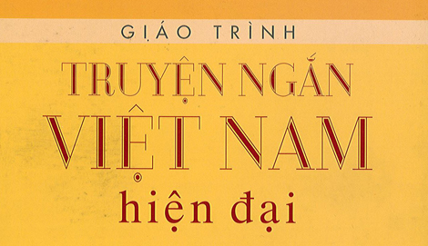
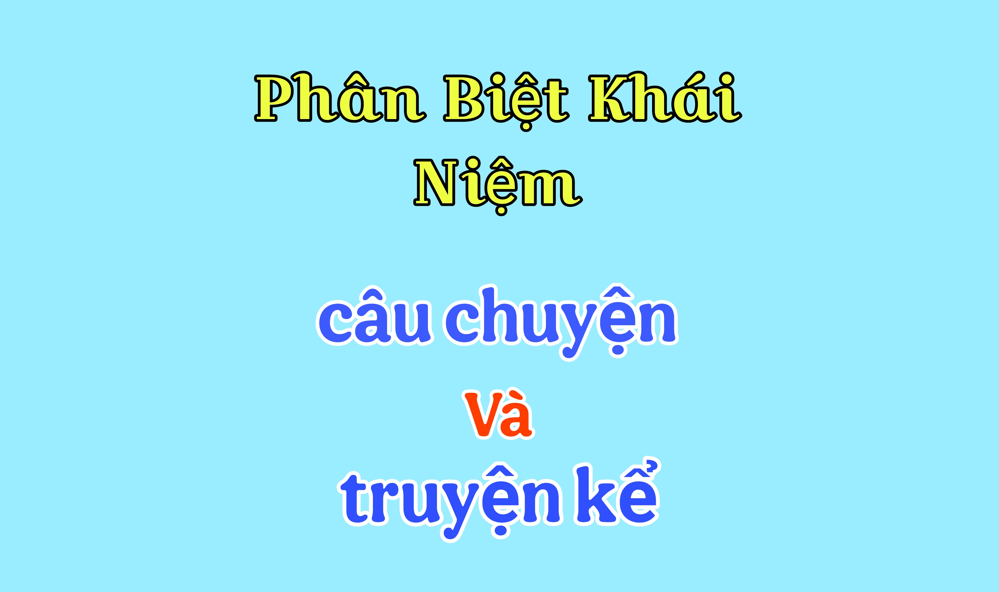
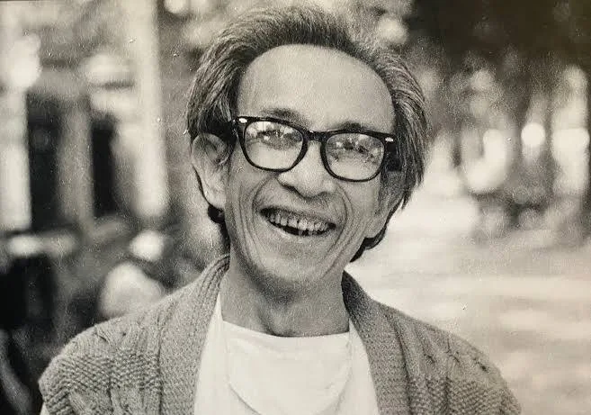

I. Tìm Hiểu chung
I. Tìm Hiểu chung
1. Tri thức ngữ văn
a. Truyện ngắn và Truyện ngắn hiện đại
Câu 1: Thế nào là truyện ngắn?
- Truyện ngắn là một thể loại văn học. Nó thường là các câu chuyện kể bằng văn xuôi và có xu hướng ngắn gọn, súc tích và hàm nghĩa hơn các câu truyện dài như tiểu thuyết. Thông thường truyện ngắn có độ dài chỉ từ vài dòng đến vài chục trang, trong khi đó tiểu thuyết rất khó dừng lại ở con số đó
1. Tri thức ngữ văn
a. Truyện ngắn và Truyện ngắn hiện đại

Câu 2: Ở Việt Nam, truyện ngắn hiện đại ra đời từ bao giờ? Chỉ ra một vài đặc điểm nổi bật của truyện ngắn hiện đại.
Ở Việt Nam, truyện ngắn hiện đại ra đời khoảng thập niên 1930. Đặc điểm nổi bật của truyện ngắn hiện đại là sự ngắn gọn, súc tích, tập trung vào một "lát cắt" của đời sống hoặc tâm lý nhân vật, thường xoay quanh một hoặc hai tình huống, thời gian, không gian hạn chế để phản ánh chân thực những biến động xã hội và tâm tư con người.
1. Tri thức ngữ văn
b. Câu chuyện và Truyện kể

Phân Biệt Khái Niệm Câu chuyện và truyện kể.
- Câu chuyện: Là nội dung của tác phẩm tự sự, nhân vật, bối cảnh, sự kiện được sắp xếp theo trật tư thời gian. (kể cái gì?).
- Truyện kể: Các sự kiện được tổ chức theo mạch kể của văn bản tự sự, gắn liền với vai trò của người kể chuyện. (kể như thế nào?).
-Ví dụ: Việc làng chợ Dầu theo Tây được xem là một câu chuyện nhưng cách kể lại câu truyện ấy của Kim Lân trong Làng được xem là Truyện kể
2. Tìm Hiểu chung về Tác giả - Tác phẩm
a. Tác Giả

- Kim Lân (1920 – 2007), tên thật là Nguyễn Văn Tài, là một nhà văn nổi tiếng của văn học Việt Nam hiện đại.
- Cuộc đời: Ông sinh tại Bắc Ninh, xuất thân trong một gia đình nông dân nghèo, sớm gắn bó với nông thôn. Hoàn cảnh khó khăn nhưng ông say mê văn chương và bắt đầu viết từ những năm 1940. Trong kháng chiến chống Pháp, Kim Lân tham gia Hội Văn nghệ Việt Nam và sau này tiếp tục hoạt động văn học.
- Sự nghiệp: Kim Lân chuyên viết truyện ngắn, đặc biệt thành công ở mảng đề tài nông thôn và người nông dân. Văn của ông giản dị, tinh tế, thấm đẫm tình yêu quê hương, cuộc sống và con người lao động.
- Nét chính: Kim Lân là “nhà văn của làng quê Việt”, thành công trong việc khắc họa chân thực, nhân hậu và giàu lòng cảm thông đối với người nông dân nghèo.